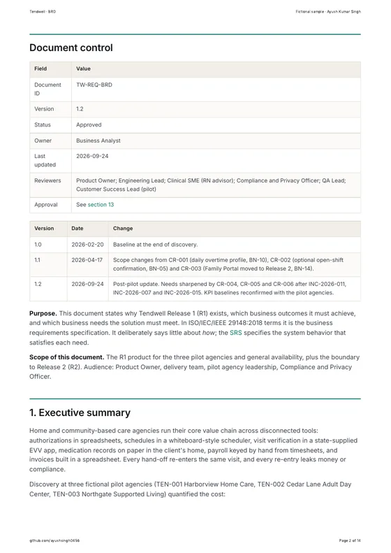
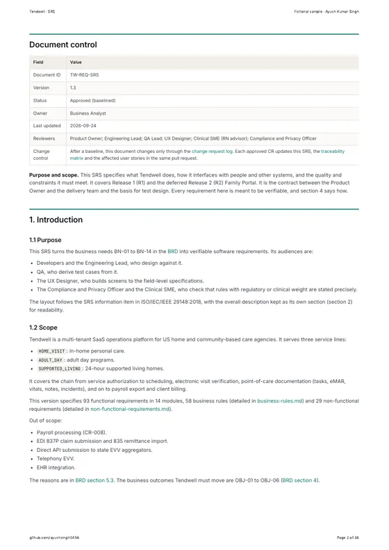

01Problem and objectives
Home-care agencies must prove, visit by visit, that care was delivered: who attended, when, where, for how long, and what was administered. Payroll then has to pay that time correctly, and billing has to charge it against the right authorization. In the fictional pilot agencies, this chain ran on phone calls, paper timesheets and MAR binders.
| Objective | KPI | Baseline | Target |
|---|---|---|---|
| OBJ-01 Make visit verification complete at the point of care | Visits with complete EVV data | 81% | 97% or more |
| OBJ-02 Cut payroll preparation effort | Payroll preparation time per pay period per agency | 14 h | 3 h or less |
| OBJ-03 Eliminate undocumented medication doses | Undocumented medication doses | 4.6% | 0.5% or less |
| OBJ-04 Invoice faster | Days to issue monthly invoices | 9 | 2 business days or fewer |
| OBJ-05 Stop work under lapsed credentials | Caregivers working with an expired blocking credential | 23 instances per quarter | 0 |
| OBJ-06 Prevent authorization-overrun denials | Billing denials caused by authorization overrun | 6.1% | 1% or less |
The hard part is not the screens. It is the rules: care must never be blocked by software, clinical records must never silently disappear, overtime and 15-minute billing units must be exact, and protected health information must stay out of every channel that cannot protect it.
02My role and approach
I worked through the same lifecycle I use on client projects, and wrote each artifact to the standard a real team would review it against. Each phase below lists the documents it produced; click one to open it.
Discover
Stakeholder register, RACI, five personas, AS-IS and TO-BE maps with 12 quantified pain points.
Define
Six objectives, 93 functional requirements, 58 business rules with decision tables, 29 measurable NFRs.
Design
C4 views, sequence and state diagrams, ERD, data dictionary and six annotated wireframes.
Deliver
54 INVEST stories, 294 Gherkin criteria, a Jira import file, sprint plan, CR and RAID logs.
Validate
Test strategy, 118 test cases, 12 UAT scenarios, synthetic test data and a Postman collection.
Operate
Incident process and three blameless reviews, each producing a change request and new tests.
03Inside the documents
Open any document below. It renders here from the repository, with the diagrams drawn live. The two anchor documents are also available as formatted PDFs.

Six measurable objectives with baselines and targets, business needs, scope and sign-off. 15 pages as PDF.

ISO/IEC/IEEE 29148 SRS: 93 functional requirements with field-level validation and messages. 37 pages as PDF.
04Designs
Six low-fidelity wireframes cover the hard states: a caregiver offline at a client's home, a low-accuracy GPS warning, an overdue dose, and the office views that resolve exceptions and lock payroll. Click any screen to enlarge it.
05Key decisions
These are the calls I would expect to defend in a design review.
EVV flags, it never blocks
A caregiver outside the 150 m geofence can still clock in. The visit raises a reason-coded exception for review, because refusing the punch would mean undocumented care.
Missed doses stay missed
A pilot agency asked to auto-cancel undocumented doses at midnight. I recommended rejecting it: doses now escalate to the nurse and stay visible as "Missed - undocumented", which keeps the clinical record honest.
Export payroll, don't run it
In-app tax processing was deferred. Tendwell computes hours and pay lines exactly and hands a mapped CSV to the agency's payroll provider, which cut scope and risk.
Open issues are written down
The SRS keeps 17 open issues, each with the behavior the release implements today, an owner and a target date, so nothing ambiguous is left implicit.
06Traceability explorer
Pick an objective, then a requirement, to follow its chain through business rules, stories, API operations and tests. The data comes from the generated traceability matrix in the repository.
07Worked example
One calculation runs through the whole document set with identical numbers: the SRS, the business rules, a story's acceptance criteria, the test cases and the test data.
08Incidents to requirements
Production incidents are where requirements prove themselves. Each review is blameless, with a timeline, 5 Whys and corrective actions, and it closes the loop with a change request.
| Incident | What happened | Requirement change |
|---|---|---|
| SEV-2 Duplicate invoices INC-2026-007 | Two scheduler workers ran the same billing job during a deployment: 214 duplicate drafts, and 6 clients paid twice. | CR-005: an idempotency key enforced by a database constraint, plus a pre-issue duplicate check |
| SEV-2 False location exceptions INC-2026-011 | iOS approximate location produced 1,180 false "location mismatch" exceptions in 3 days. | CR-004: a separate "Low GPS accuracy" exception and a precise-location prompt |
| SEV-1 Privacy INC-2026-015 | An escalation email reached a deactivated user, because recipients were cached when the ladder was configured. | CR-006: recipients resolved at send time, and no PHI in email bodies |
09Tech stack
The architecture I specified with the (fictional) engineering lead. As the BA I own the requirements it must satisfy, the integration contracts and the quality-attribute scenarios, not the code.
- Agency web app
- React 18 + TypeScript (Vite), single-page app on a CDN
- Caregiver app
- React Native (Expo), offline-first with an encrypted local store
- API
- Node.js with NestJS as a modular monolith, OpenAPI-first REST
- Jobs
- Worker on the same codebase with BullMQ on Redis, single-flight job claims
- Database
- PostgreSQL 16 with row-level security per tenant
- Cloud
- AWS: ECS Fargate, RDS, CloudFront, WAF, KMS
- Payments
- Stripe Elements and webhooks for subscriptions
- Identity checks
- Liveness vendor SDK behind an adapter
10Reflection
What worked. Treating the requirements register as data, not prose. Once IDs, numbers and examples lived in one place, every downstream artifact could be generated or checked, and consistency stopped depending on memory.
What I'd do next. Run a usability test of the clock-in flow with real caregivers, add state-specific EVV aggregator formats, and replace the illustrative cost model with real agency data.
Related. The care-agency platform rebuild covers a real client project in the same domain.